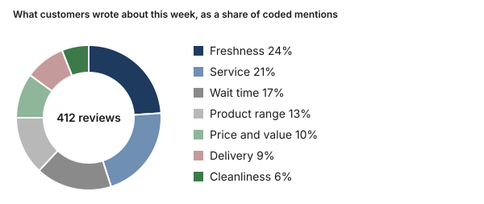
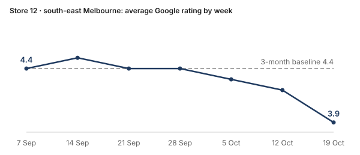
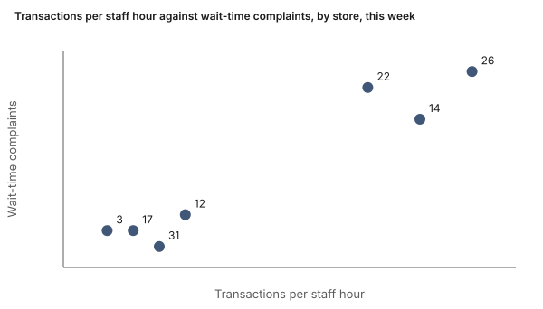

Subject: Week to 25 October: what changed in reviews, and why it might have
From: Review DeskTo: GM, Operations, Area managers, Marketing, Product · store managers get their own section · internal onlyMonday 26 October, 7:00 am
Most of this week's change sits in two places: stale donuts after 8 pm at three south-east Melbourne stores, and longer waits at food-court stores while the half-dozen deal ran. One allergen review was escalated on Saturday. Every insight below comes with its evidence, and every suggestion is only a suggestion: comment on any of them.
Across the network
What did customers write about most this week?Freshness and service were the themes customers mentioned most across the whole network, as they have been for the last 3 months. Mentions of waiting grew, and almost all of that growth came from food-court stores.
17% of mentions were about waiting, up from 11% over the last 3 months
Theme shares counted by code from 412 coded reviews; no explanation claimed.

What else changed
Why did complaints about stale donuts jump after 8 pm at three south-east Melbourne stores?Reviews calling the donuts stale rose at Stores 12, 14 and 17 this week, and most describe an evening visit. The rise coincides with those stores keeping a full display after 8 pm since their closing time moved later on 5 October.
23 reviews mentioning stale donuts after 8 pm, against an average of 6 a week over the last 3 months
Coincides with the later closing time and full evening displays at all three stores. Not yet tested. Judge's label: coincides with

Suggestion: at one of the three stores, trial a smaller final bake and a reduced display after 8 pm for two weeks, then compare its stale mentions and waste with the other two.
Did the weekday half-dozen deal bring in buyers but slow the food-court counters?The deal sold well at food-court stores, and wait-time complaints at those stores rose in the same lunch hours. Food-court stores were already serving the most transactions per staff hour. The promotions calendar takes the deal to petrol-station kiosks from 2 November.
32 wait-time complaints at Stores 14, 22 and 26 this week, against 11 in the week before the deal
Coincides with the deal's lunch-hour redemptions; rosters were not changed for the deal. Judge's label: coincides with

Suggestion: before the deal reaches the kiosks, add one staff hour over lunch at food-court stores, or start the deal at 2 pm, and compare waits.
Why are kiosk customers buying fewer items per sale when their reviews barely changed?Items per sale at petrol-station kiosks have fallen for four weeks, with no matching change in reviews. Stock records show the glazed range selling out before noon on most days, so customers may be leaving with less than they came for.
1.8 items per sale at petrol-station kiosks this week, against 2.2 over the last 3 months
Consistent with morning stock-outs of the glazed range. Other explanations not yet ruled out. Judge's label: consistent with
Suggestion: move one tray of glazed stock onto the morning delivery at Stores 8 and 29 for two weeks, and compare items per sale.
Which stores went quiet this week: fewer customers, or just fewer reviews?Stores 3 and 8 each got too few reviews this week for the desk to report their themes, so they are left out of the theme shares. Sales at the regional kiosk also fell, while the Geelong store held steady.
4 reviews each at Stores 3 and 8, below the minimum of 10 a week the desk needs to report a store's themes
Below the minimum sample; no themes reported for these stores.
Suggestion: put a QR survey card on the counter at both stores for two weeks, to show whether customers are quieter or simply fewer.
Sensitive insights
Was a customer told a donut was nut-free before an allergic reaction? sensitive · food safetyOne Google review posted on Saturday at Store 22 · western Melbourne describes an allergic reaction after a donut the customer says staff called nut-free. The desk doesn't judge the claim. It sent the review to the area manager and the food-safety lead as soon as it was coded.
1 review, escalated on the day it was posted
Escalated; the food-safety lead's review is open.
Escalated: Saturday 25 October, 3:40 pm, to the area manager and the food-safety lead
Suggestion: hold any public reply until the food-safety lead has reviewed it.
What is one new store manager doing that customers keep praising? sensitive · named staffSince a new manager started at Store 31 · western Melbourne on 14 September, reviews praising quick, friendly service have risen, and many name the manager. Staff names stay with the area manager and never feed performance reviews.
14 reviews this week praise the service, against 5 a week before the manager started
Consistent with the manager change; the other western Melbourne stores show no rise. Judge's label: consistent with
Suggestion: ask the manager what changed at the counter, and turn it into a short training note for other stores.
For store managers
Each store manager's section lists the insights that touch their store, with the evidence one link away.
For Thursday's ops meeting
The desk keeps this week's session open for Thursday's ops meeting. Ask it a question there and it answers from the same evidence, or tests two explanations side by side.
- Should one south-east Melbourne store trial a smaller evening bake?
- Should the half-dozen deal wait for extra lunch staff before it reaches the kiosks?
- Who follows up the allergen review, and when?
Reply to steer next week's run
Ask for anything in plain words, or comment on any insight above.